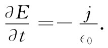
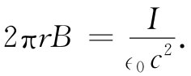
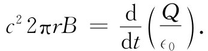
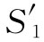

作为第一个例子，我们要考虑一个具有球对称的径向电流分布发生的情况。我们设想有一个其上面带有放射性材料的小球，这种放射性材料正喷射出一些带电粒子（或者也可以设想有一大块胶体，在其中心处有一个小空穴，用一支皮下注射针在空穴注入了一些电荷，并从那里慢慢地渗漏出来）。在上述任一种情况下，我们都具有处处沿径向流出的电流。下面将假定，这一电流的大小在各不同方向上都相同。
令在任意半径r以内的总电荷为Q（r）。如果在相同半径处的径向电流密度为j（r），则式（18.2）要求Q减少的速率为
现在我们要问，在这种情况下由电流所产生的磁场如何。假设在半径为r的球面处画出某一条回路Γ，如图18-1所示。这样就有一些电流会穿过该回路，因而也许可以期望求出沿图上所示方向的磁场环流来。
图18-1 一个具有球形对称的电流，其磁场如何
但这样我们就已经处于困难之中了。B如何能在该球面上有任何特殊方向呢？对Γ的另一种选择将会容许我们断定它的方向恰恰与所示的相反，所以怎么能够 有环绕着那些电流的B的任何环流呢？
幸而麦克斯韦方程救了我们。B的环流不仅取决于穿过Γ的总电流 ，而且也取决于穿过它的电通量 对时间的变化率，一定是这两部分刚好互相抵消。让我们看看是否能证明确实是这样。
在半径为r处的电场必定是Q（r）/（4π∈0 r2 ）——只要如我们所假定的那样，电荷是球对称分布的。电场沿着径向，而其时间变化率为
将此式与式（18.5）比较，我们就知道在任何半径处
 （18.7）
在方程Ⅳ中那两个源的项互相抵消了，因而B的旋度就永远为零。在我们的例子中不存在磁场。
作为第二个例子，我们考虑用来对平行板电容器充电的导线的磁场（参见图18-2）。如果板上的电荷随时间变化（但不是太快），则导线里的电流等于dQ/dt。我们会料到这电流将产生环绕着该导线的磁场。肯定地说，结束于极板的电流必定产生正常的磁场——它不可能依赖于电流在何处消失。
图18-2 一个正在充电的电容器附近的磁场
假定选取一条回路Γ1 ，那是一个如图（a）所示的半径为r的圆周。磁场的线积分应等于电流I除以∈0 c2 ，即
 （18.8）
这是对于恒定电流应该获得的结果，不过在加上麦克斯韦的附加项之后它仍然正确，因为如果我们考虑那个圆周内的平面S，则在该面上将不会有电场（假定那条导线是十分优良的导体），所以∂E/∂t的面积分为零。
然而，假设现在慢慢地把曲线Γ1 向下移动，直至电容器的极板水平为止，我们得到的结果总是相同。此时电流I变为零，磁场是否就消失了呢？这将是十分奇怪的。让我们来看看，对于那条其平面通过电容器两板之间而其半径为r的圆周曲线Γ2 ［图18-2（b）］，麦克斯韦方程对此将做何解释。B环绕Γ2 的线积分为2πrB，它必然等于穿过该圆面S2 的E通量对时间的微商。我们从高斯定律得知，这个E通量应等于1/∈0 乘以电容器一个板上的电荷。于是就有
 （18.9）
那很方便，这结果与我们在式（18.8）中得到的相同。对变化着的电场取积分与对在导线里的电流取积分给出相同的磁场。当然，这恰好就是麦克斯韦方程所讲的。对于图18-2（b）所示的由同样的圆周曲线Γ1 为边界的两个面S1 和 ，只要应用与上述相同的论证便很容易看出结果永远应该如此。穿过S1 的有电流I，但没有电通量。而穿过 的则没有电流，但却有一个以速率I/∈0 变化着的电通量。如果把方程Ⅳ应用到任何一个面，则会得到相同的B。
从我们迄今对麦克斯韦新项的讨论，你可能会觉得有了它并没有增加多少东西——它只是把方程组安排得符合于我们已经预期的结果。诚然，若只是孤立地 考虑方程Ⅳ，就不会发现任何特别新鲜的东西。然而，“孤立地 ”这个词却十分重要。麦克斯韦在方程Ⅳ中的那个小小的改变，当它与其他的方程结合 起来时，就的确会产生不少全新而又重要的东西。然而，在考虑这些事情之前，我们要对表18-1多说几句。